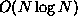
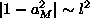
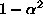
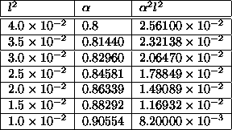
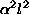
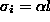
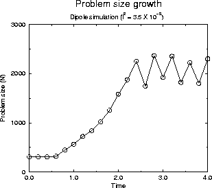

Two calculations are demonstrated to illustrate the convergence properties
and capabilities of ECCSVM. The purpose of this section is to analyze the
method in its simplest form and verify its spatial accuracy.
The method has been implemented with direct
summation which is  and a fast multipole summation algorithm
that has
and a fast multipole summation algorithm
that has

complexity. Typical run times vary from 15 minutes for a low resolution dipole experiment to more than a day for a high resolution dipole experiment on a DEC Alpha 255/233. The first example is a simple Gaussian vortex and it has a known analytic solution. The second example is a dipole propagation and evolution problem which has no known solution. For a series of experiments, as
Since,

for small l, the last term matches the first term. The second term tells us that
should scale like l in a sequence of experiments. A table of parameters used for both experiments is provided in Table (5.1).

is the blob width initially.The initial conditions arrange computational elements along a regular array. The initial aspect ratios are 1.0 and the initial widths are

. Since both initial conditions are linear combinations of Gaussians, the strength of each element is determined by the exact de-regularization procedure discussed in [24].Two methods simultaneously integrate equation (3.12). a third order Adams-Bashforth explicit scheme solves the convection term in equation (3.12) because velocity calculations are expensive. A fourth order Runge-Kutta scheme integrates the remaining deformation terms because they are inexpensive O(N) calculations.

An aggressive merging algorithm is used to control the problem size in
experiments. As  , the problem size grows large but
many elements in the simulation can be merged to remove extraneous degrees
of freedom. A similar scheme was successfully implemented for CCSVM
[23]. Thus, the problem size for these calculations tends to
stabilize as shown in Fig. (5.1) for example.
, the problem size grows large but
many elements in the simulation can be merged to remove extraneous degrees
of freedom. A similar scheme was successfully implemented for CCSVM
[23]. Thus, the problem size for these calculations tends to
stabilize as shown in Fig. (5.1) for example.